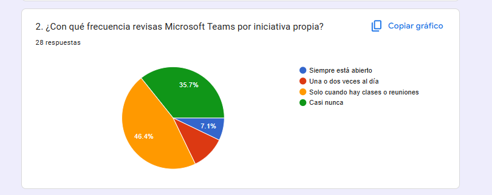
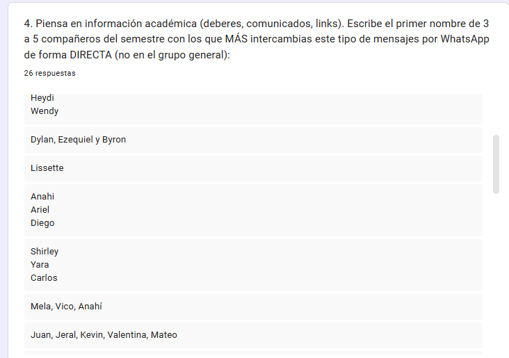
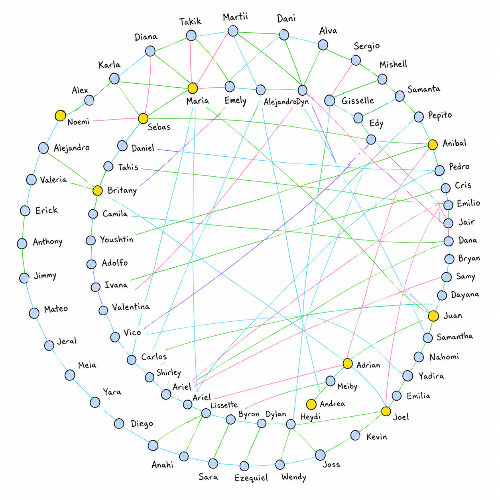

Analisis de propagacion de datos en el 2do semestre de Ing. en Sistemas
Realizado por el grupo 8


Capa WhatsApp (Alta Densidad)
| Nodos | Joel | Andrea | Juan | Britany | Sebas | Maria | Anibal | Adrian | Noemi |
| Joel | 0 | 0 | 1 | 0 | 0 | 0 | 0 | 1 | 1 |
| Andrea | 0 | 0 | 1 | 1 | 0 | 1 | 0 | 0 | 0 |
| Juan | 1 | 1 | 0 | 1 | 0 | 0 | 0 | 0 | 0 |
| Britany | 0 | 1 | 1 | 0 | 1 | 0 | 0 | 1 | 0 |
| Sebas | 0 | 0 | 0 | 1 | 0 | 1 | 1 | 0 | 0 |
| Maria | 0 | 1 | 0 | 0 | 1 | 0 | 0 | 0 | 1 |
| Anibal | 0 | 0 | 0 | 0 | 1 | 0 | 0 | 1 | 1 |
| Adrian | 1 | 0 | 0 | 1 | 0 | 0 | 1 | 0 | 0 |
| Noemi | 1 | 0 | 0 | 0 | 0 | 1 | 1 | 0 | 0 |
Capa Instagram (Moderada)
| Nodos | Joel | Andrea | Juan | Britany | Sebas | Maria | Anibal | Adrian | Noemi |
| Joel | 0 | 1 | 0 | 0 | 0 | 0 | 0 | 1 | 0 |
| Andrea | 1 | 0 | 0 | 1 | 0 | 0 | 0 | 0 | 0 |
| Juan | 0 | 0 | 0 | 0 | 1 | 1 | 0 | 0 | 0 |
| Britany | 0 | 1 | 0 | 0 | 0 | 0 | 0 | 1 | 0 |
| Sebas | 0 | 0 | 1 | 0 | 0 | 0 | 0 | 0 | 1 |
| Maria | 0 | 0 | 1 | 0 | 0 | 0 | 1 | 0 | 0 |
| Anibal | 0 | 0 | 0 | 0 | 0 | 1 | 0 | 0 | 1 |
| Adrian | 1 | 0 | 0 | 1 | 0 | 0 | 0 | 0 | 0 |
| Noemi | 0 | 0 | 0 | 0 | 1 | 0 | 1 | 0 | 0 |
Capa TikTok (Viral / Dispersa)
| Nodos | Joel | Andrea | Juan | Britany | Sebas | Maria | Anibal | Adrian | Noemi |
| Joel | 0 | 0 | 1 | 1 | 1 | 0 | 0 | 0 | 0 |
| Andrea | 0 | 0 | 0 | 0 | 0 | 1 | 1 | 0 | 0 |
| Juan | 1 | 0 | 0 | 0 | 0 | 0 | 0 | 1 | 0 |
| Britany | 1 | 0 | 0 | 0 | 0 | 0 | 0 | 0 | 1 |
| Sebas | 1 | 0 | 0 | 0 | 0 | 0 | 0 | 1 | 0 |
| Maria | 0 | 1 | 0 | 0 | 0 | 0 | 0 | 0 | 1 |
| Anibal | 0 | 1 | 0 | 0 | 0 | 0 | 0 | 0 | 0 |
| Adrian | 0 | 0 | 1 | 0 | 1 | 0 | 0 | 0 | 0 |
| Noemi | 0 | 0 | 0 | 1 | 0 | 1 | 0 | 0 | 0 |
Capa Teams (Cuello de Botella)
| Nodos | Joel | Andrea | Juan | Britany | Sebas | Maria | Anibal | Adrian | Noemi |
| Joel | 0 | 1 | 0 | 0 | 0 | 0 | 0 | 0 | 0 |
| Andrea | 1 | 0 | 0 | 0 | 0 | 0 | 0 | 0 | 0 |
| Juan | 0 | 0 | 0 | 1 | 0 | 0 | 0 | 0 | 0 |
| Britany | 0 | 0 | 1 | 0 | 0 | 0 | 0 | 0 | 0 |
| Sebas | 0 | 0 | 0 | 0 | 0 | 1 | 0 | 0 | 0 |
| Maria | 0 | 0 | 0 | 0 | 1 | 0 | 0 | 0 | 0 |
| Anibal | 0 | 0 | 0 | 0 | 0 | 0 | 0 | 1 | 0 |
| Adrian | 0 | 0 | 0 | 0 | 0 | 0 | 1 | 0 | 0 |
| Noemi | 0 | 0 | 0 | 0 | 0 | 0 | 0 | 0 | 0 |
